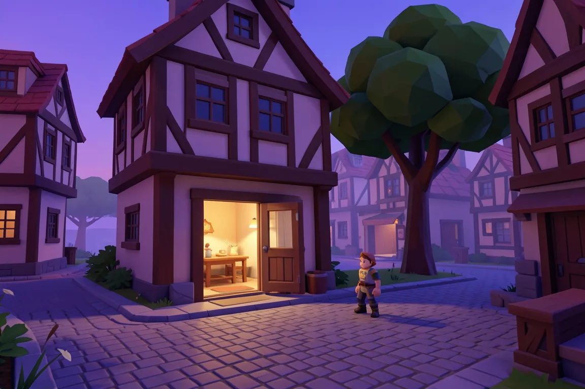

Modeller med middels polygonantall og teksturer malt for hånd: lys, skygge, slitasje og fargeskift ligger i malingen, ikke i motoren. Tunge, overdrevne bygninger og klare, mettede farger leses tydelig på avstand.

Kjerneidé
En malers hånd kan bære lyset i en verden, slik at et lite motorbudsjett likevel gir et varmt, rikt sted.
Designprinsipper
Mal lys ovenfra inn i hver tekstur: lysere toppkanter, mørkere bunner.
Overdriv formene: tykke vegger, store bjelker, skjeve tak.
Bruk mettede, varme farger med kjølige, fargeforskjøvne skygger.